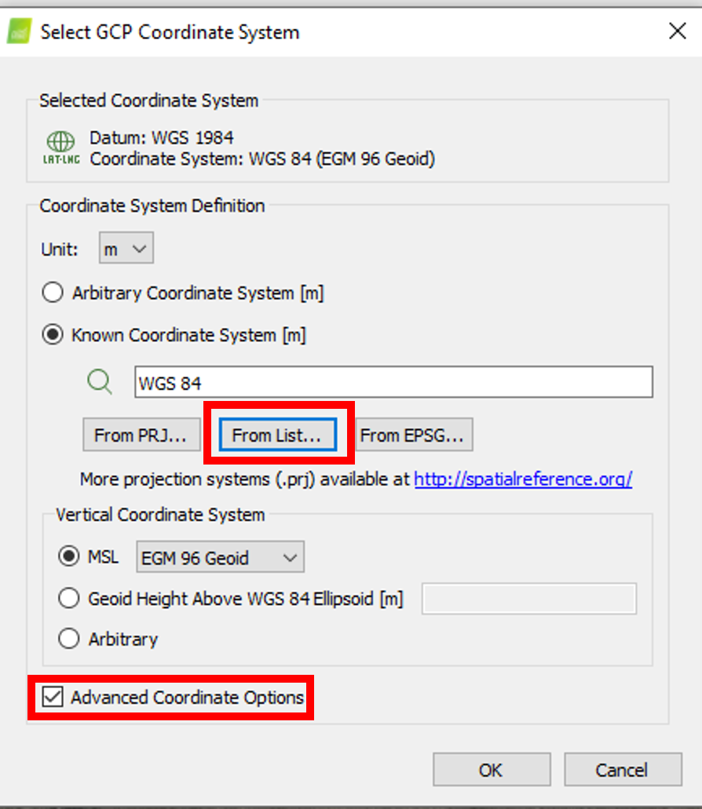
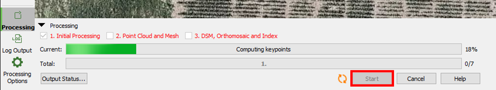
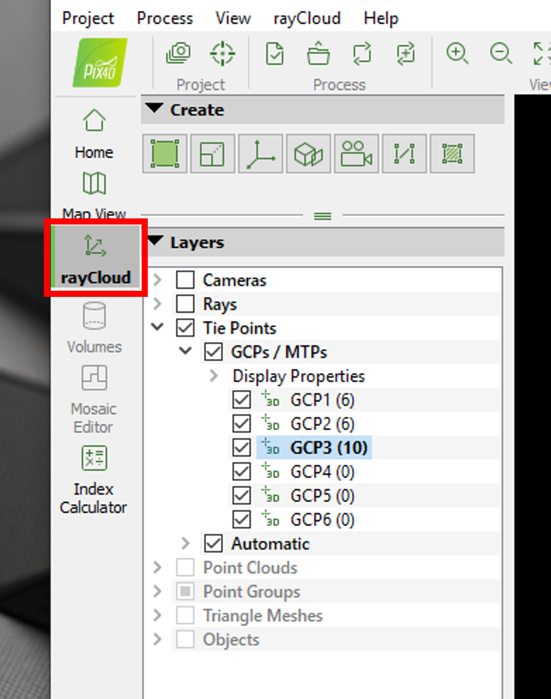
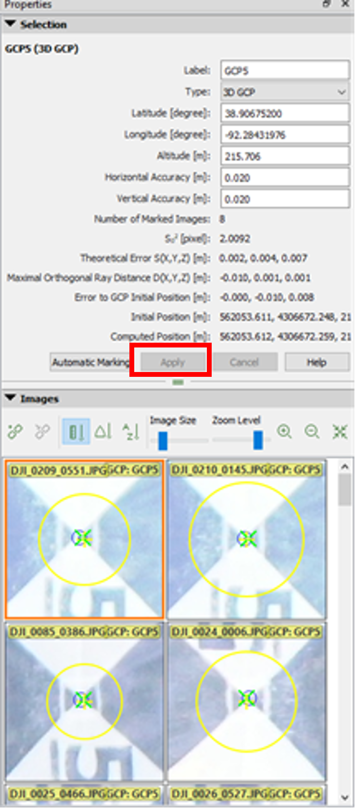

Stitching with Pix4Dmapper
How to Use Pix4Dmapper to Stitch Drone Images (m2pro/ANAFI drones only)
Instructions:
- Pix4Dmapper is installed on the lambda2 in the dry lab (NOT the Linux lambda)
- Password: █████████-███-███████-██████ (You put it in your password wallet right?😉)
- Check what flights need to be stitched on the To Be Stitched List_2022: Teams > UAV Missions > Files
- Launch Pix4Dmapper on desktop
- Select New Project
- Name file FlightDate(YYMMDD)_camera(m2pro/ANAFI)_FieldName_Pix4D
- Create In: This PC > Desktop > Pix4D > 202X Fields > “Your Field Name” > 1 Folder called FlightDate(YYMMDD)_drone(m2pro/RE-mx/ANAFI)_FieldName_Pix4D
- Select Images, Click the Add Images… button, file explorer will open.
- Navigate to This PC > wldata (Under Network locations) > Field_Data_202X > UAV_images_by_field_202X > Select a Field > Select a folder by Date (YYMMDD) and drone type (m2pro/ANAFI only)
- Ctrl + A to select all of the JPGs in the folder, Click Open (images will be selected, green check will appear) then Click Next >
- Keep default Image Properties (Pix4D uses the GPS info in drone images), Click Next >
- Keep default settings of Select Output Coordinate System, Click Next >
- Processing Options Template will open, under Standard select 3D Maps, (Do not check the box next to Start Processing), Click Finish
- After the map loads, Import the GCPs
- Select the Project tab
- Select GCP/MTP Manager…, the GCP Manager Window will open
- In the GCP Coordinate System click the Edit… button, the Select GCP Coordinate System window will open
- Check the Advanced Coordinate Options box
- Click the From List… button under the Known Coordinate System [m] search bar, Coordinate System window will open
- Select the following from the dropdown lists
Datum: WGS 1984
Coordinate System: WGS 84 (Top of list, look for the globe
 )
)
- In the GCP/MTP Table click the Import GCPs… button, the Import Ground Control Points window will open
- Coordinates order: Longitude, Latitude, Altitude
- Click Browse…, navigate to This PC > Desktop > Pix4D > 2022 Fields > GCPs > Select your field’s .txt file, Click Open, Click OK, Click OK. The GCPs will appear as blue crosses on the map
- Save Project!
- Initial Processing
- Click the Processing tab on the bottom left side of the window, check the box next to 1. Initial Processing (ensure other boxes are unchecked)
 )
) - Click the Processing Options tab on the bottom left side of the window (gear shape icon), the Processing Options window will open, ensure Initial Processing step is clicked on
- Click the Matching tab, in the Matching Strategy header check the Use Geometrically Verified Matching box )
- Click the Calibration tab, under the Camera Optimization header use the Internal Parameters Optimization dropdown box and select All Prior, Click OK, window will close
 )
) - At the bottom of the screen Click the Start bottom to begin Initial Processing (This will take hours, just leave Pix4D running 😊) )
- Click the Matching tab, in the Matching Strategy header check the Use Geometrically Verified Matching box
- Click the Processing tab on the bottom left side of the window, check the box next to 1. Initial Processing (ensure other boxes are unchecked)
- Marking GCPs
After initial processing switch to rayCloud view on the left side of the Pix4D Window, Click on the blue GCP marker and Images will open up on the right (I like to uncheck Cameras and Rays for a cleaner map) )
You can press hold down to move around the images and zoom in and out to find the GCP (they may not be in every image, that’s ok)
Click on the center of the GCP to mark it, repeat on 8-15 images. Do this for each GCP.

In the Selection panel above the Image panel, Click the Apply button occasionally to update and mark the GCPs
Select the Process tab at the top of the window
- Select Reoptimize (this will take about 10 minutes), a Warning will come up, Click OK
- Generate a newQuality Report by Clicking the Process tab and Selecting Generate Quality Report (this will take about 15 minutes). Ensure there are green checks next to the 5 parameters in the Quality Check (if not, troubleshoot w/ help from the Pix4D website)
Save Project!
- Point Cloud and Mesh and DSM, Orthomosaic and Index
- Check the box next to 2. Point Cloud and Mesh and 3. DSM, Orthomosaic and Index, in the processing window (be sure to uncheck the previous step so Pix4D doesn’t rerun and take even longer), Click Start and accept default Processing Options (this will take hours, leave Pix4D running 😊)
- Save Project!
- To see your 3D map, in the Ray Cloud viewer check the box next to Point Graphs (let it load) and then check the box next to Triangle Meshes. Enjoy!
- Update the To Be Stitched List_202X on Teams > UAV Missions > Files
- Open orthomosaic in QGIS.
- Create a directory within the flight directory with the name of the flight directory plus “_QGIS.”
- Open QGIS
- Save project in newly created QGIS directory with flight name plus “_QGIS”.
- Go to Layer -> Add Layer -> Add Raster Layer.
- Find the orthomosaic “.tif” file just created by Metashape. And add it.
- Go to Project -> Properties. Select CRS from the side tab. Change the Coordinate Reference System to “WGS 84 / UTM zone 15N” Authority ID: “EPSG:32615” if needed.
- Rotate the image using the controls on the bottom taskbar if needed. Rows should be vertical and ranges horizontal.
- Create a directory within the flight directory with the name of the flight directory plus “_QGIS.”
- Import reference grid.
- Copy the Reference_grid file from the main field directory to the QGIS directory.
- Rename the copied file replacing the field name and year with the flight name. (e.g. “Reference_grid_210717_m2pro_Gen7.gpkg”
- Go to Layer -> Add Layer -> Add Vector Layer.
- Select the new Reference_Grid file you just renamed and click Open. Then click Add. Then Close.
- Right Click on the newly added layer and go to Properties. Select Symbology in the left hand pane. Select Simple Fill. Change the Fill Color to Transparent Fill. Click ok.
- Check that the grid lines up properly with the field data. Make any minor adjustments that may be needed.